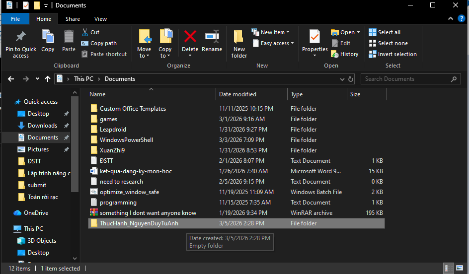
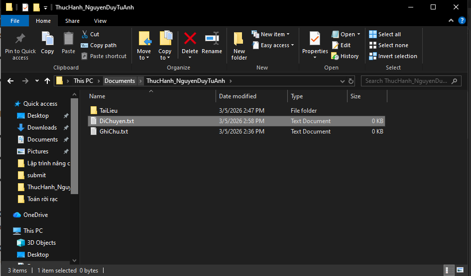
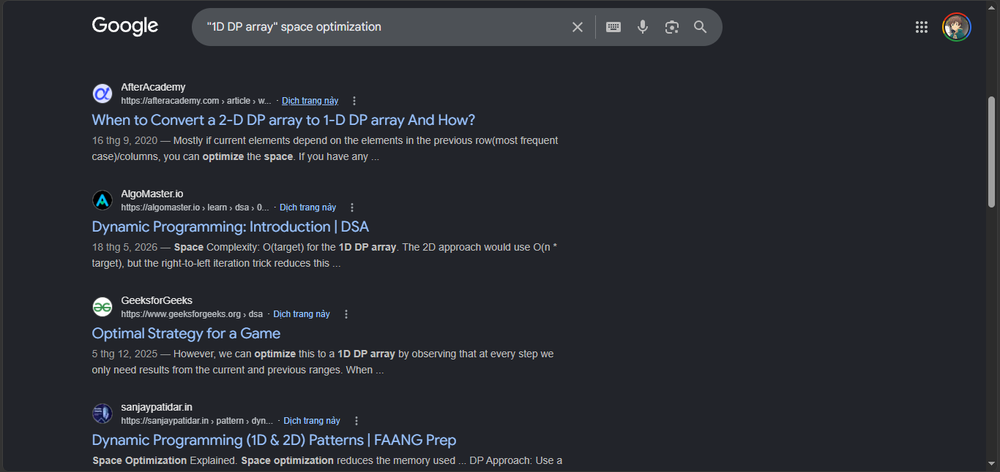
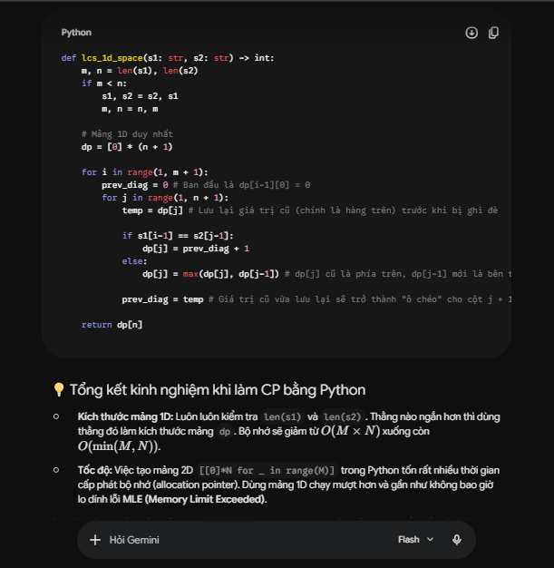
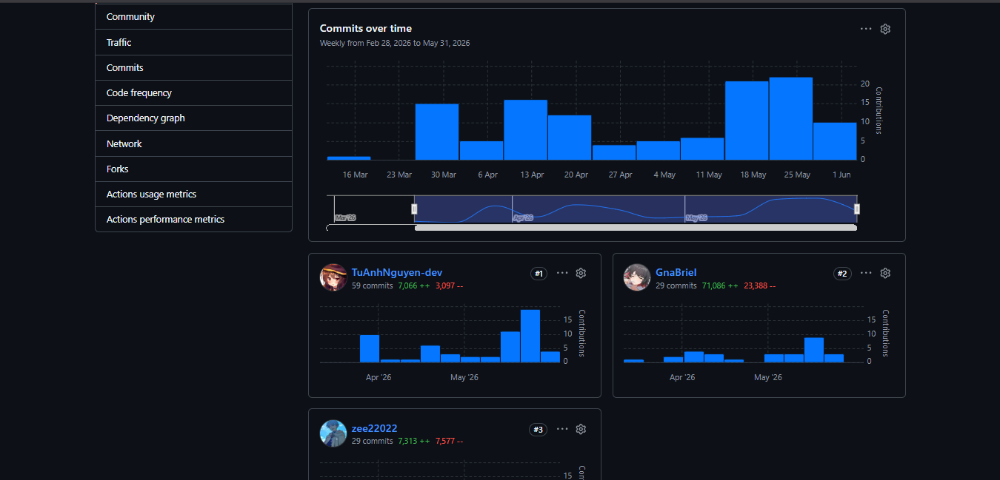
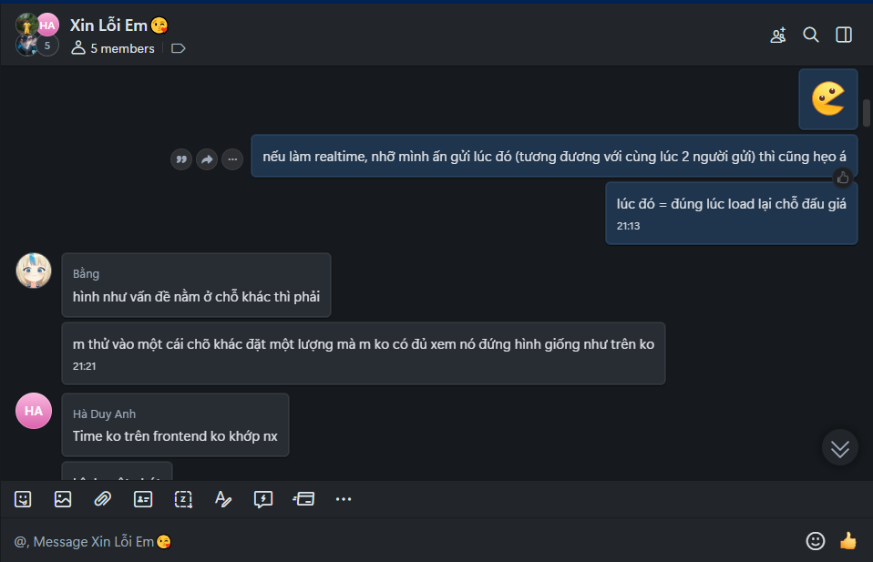

💻 Không gian Thực hành & Phát triển Tư duy
Chào mừng bạn đến với kho lưu trữ các dự án và bài tập thực hành môn Công nghê số của tôi trong quá trình rèn luyện tại UET.
Với định hướng trở thành một Kỹ sư phần mềm vững vàng, tôi quan niệm mọi kỹ năng công nghệ đều bắt nguồn từ những nền tảng cốt lõi nhất. Chuỗi bài tập dưới đây không chỉ là thao tác công cụ máy móc, mà là hành trình hệ thống hóa tư duy: từ việc tổ chức không gian lưu trữ mức hệ điều hành, cộng tác trực tuyến trên nền tảng đám mây, cho đến việc ứng dụng sức mạnh của Trí tuệ nhân tạo (AI) một cách tối ưu và liêm chính.
Bài 1: Các thao tác cơ bản với tệp và thư mục
1. Mục tiêu bài tập
Thực hành và nắm vững các thao tác cơ bản với tệp và thư mục trên hệ điều hành. Việc thiết lập cấu trúc lưu trữ gọn gàng giúp tối ưu hóa không gian làm việc và quản lý dữ liệu hiệu quả.
2. Quá trình thực hiện
Quá trình thực hành được triển khai theo các bước tuần tự:
- Khởi tạo thư mục gốc: Mở File Explorer, truy cập vào ổ đĩa dữ liệu hoặc thư mục Documents. Tại đây, tạo thư mục mới với quy tắc đặt tên là ThucHanh_hotensinhvien. Cụ thể trong dự án này là ThucHanh_NguyenDuyTuAnh.
- Quản lý và tổ chức tệp: Tạo tệp tin văn bản GhiChu.txt và thực hiện thao tác đổi tên thành GhiChuQuanTrong.txt. Sau đó, tạo thêm một thư mục con tên là TaiLieu.
- Thao tác điều hướng dữ liệu: Thực hiện việc sao chép (Copy & Paste) tệp tin vào thư mục con. Đồng thời, tạo một tệp DiChuyen.txt để thực hành lệnh di chuyển tệp tin (Cut & Paste).
- Quản lý vòng đời dữ liệu: Xóa tệp tin (Delete) để đưa vào Thùng rác (Recycle Bin). Thực hành lệnh xóa vĩnh viễn (Shift + Delete) không qua Thùng rác và khôi phục (Restore) tệp đã xóa trở lại vị trí ban đầu.
3. Minh họa kết quả
Dưới đây là các hình ảnh minh họa cho cấu trúc thư mục đã thiết lập:


Bài 2: Tìm kiếm và đánh giá thông tin học thuật
1. Mục tiêu bài tập
Ứng dụng các toán tử tìm kiếm nâng cao để rà soát tài liệu chuyên ngành hiệu quả. Đồng thời, thực hành kỹ năng thẩm định độ tin cậy của các nguồn tài liệu học thuật trên Internet.
2. Quá trình thực hiện & Kết quả
A. Ứng dụng toán tử tìm kiếm
Thay vì tìm kiếm thông thường, tôi đã kết hợp các toán tử để thu hẹp phạm vi tìm kiếm các tài liệu liên quan đến tối ưu hóa mã nguồn và cấu trúc dữ liệu:
| Toán tử | Cú pháp đã dùng | Mục đích / Tác dụng |
|---|---|---|
" " (Chính xác) |
"1D DP array" space optimization |
Bắt buộc kết quả phải chứa cụm từ chính xác về mảng quy hoạch động 1 chiều. |
site: |
site:github.com CI/CD workflow |
Chỉ giới hạn kết quả tìm kiếm các luồng CI/CD nằm trên nền tảng GitHub. |
filetype: |
filetype:pdf Java backend architecture |
Chỉ tìm và tải các tài liệu nghiên cứu, sách dưới định dạng PDF. |
- (Loại trừ) |
MySQL indexing -tutorial -video |
Loại bỏ các bài hướng dẫn cơ bản hoặc video, chỉ giữ lại tài liệu chuyên sâu. |
B. Bảng đánh giá nguồn tin học thuật
Để đảm bảo tính liêm chính học thuật, các tài liệu thu thập được đánh giá dựa trên tiêu chí CRAAP (Currency, Relevance, Authority, Accuracy, Purpose):
| Tiêu chí đánh giá | Cách thực hiện thực tế |
|---|---|
| Nguồn gốc & Tác giả (Authority) | Ưu tiên các bài báo từ IEEE, Springer, hoặc tài liệu chính thức từ các trường Đại học có đuôi .edu, .gov. |
| Tính cập nhật (Currency) | Sử dụng công cụ "Any time" trên Google Scholar để chỉ lấy tài liệu xuất bản trong vòng 3-5 năm trở lại đây. |
| Tính khách quan (Purpose) | Kiểm tra xem tài liệu có bị chi phối bởi mục đích thương mại (quảng cáo sản phẩm) hay không. |
3. Minh họa kết quả
Ví dụ minh họa khi sử dụng tổ hợp toán tử tìm kiếm nâng cao:

Bài 3: Viết Prompt hiệu quả cho các tác vụ học tập
1. Mục tiêu bài tập
Thực hành kỹ năng Prompt Engineering (Kỹ nghệ Gợi ý) để tương tác với các mô hình ngôn ngữ lớn (LLMs). Mục tiêu là biến AI thành một công cụ hỗ trợ giải quyết các vấn đề học tập phức tạp, rèn luyện tư duy lập trình và nâng cao ngoại ngữ.
2. Quá trình thực hiện & So sánh Prompt
Để minh họa, tôi đã chọn một bài toán tối ưu hóa cốt lõi trong lập trình là Quy hoạch động (Dynamic Programming). Dưới đây là sự tiến hóa từ một câu lệnh cơ bản thành một Prompt chuyên sâu:
❌ Prompt ban đầu (Sơ sài)
"Giải thích cách tối ưu bộ nhớ trong quy hoạch động."
✅ Prompt cải tiến (Đa mục tiêu & Chuyên sâu)
"Act as an expert in competitive programming. I want to understand space optimization in dynamic programming, specifically how to convert 2D DP arrays into 1D arrays to optimize memory usage in Python. Use the 'maximize common subsequences' problem as an example. Explain this strictly in English so I can practice thinking directly in the language rather than translating from Vietnamese."
- Gán vai trò: Yêu cầu AI đóng vai chuyên gia (Role-playing).
- Chi tiết hóa kỹ thuật: Chỉ định rõ công nghệ (Python) và kỹ thuật cụ thể (hạ mảng 2D xuống 1D).
- Mục tiêu ngoại ngữ: Ép AI giải thích hoàn toàn bằng tiếng Anh để rèn luyện tư duy ngôn ngữ trực tiếp (không qua dịch thuật).
3. Minh họa kết quả đầu ra
Kết quả nhận được từ Prompt cải tiến vô cùng ấn tượng. AI đã cung cấp chính xác đoạn mã Python tối ưu không gian O(N), đi kèm với phần giải thích luồng tư duy mạch lạc hoàn toàn bằng tiếng Anh như yêu cầu.

Bài 4: Giao tiếp và hợp tác trong môi trường số
1. Mục tiêu bài tập
Thực hành vận dụng các nền tảng số chuyên nghiệp để tổ chức công việc, quản lý mã nguồn và duy trì liên lạc hiệu quả khi làm việc nhóm từ xa, đảm bảo tiến độ và chất lượng dự án chung.
2. Quá trình thực hiện và Phối hợp
Trong quá trình phát triển hệ thống Online-Auction (Backend Java, cơ sở dữ liệu MySQL), nhóm chúng tôi đã thiết lập một quy trình làm việc Agile/Scrum trên môi trường số như sau:
- Quản lý tiến độ (Kanban Board): Sử dụng tính năng GitHub Projects để tạo bảng Kanban. Các đầu việc (tạo database MySQL, viết API đăng nhập, xử lý logic đấu giá) được chia nhỏ thành các Issues và di chuyển qua các cột: Todo ➔ In Progress ➔ In Review ➔ Done.
- Giao tiếp đồng bộ & không đồng bộ:
- Tạo server Discord / nhóm Zalo riêng để trao đổi nhanh và hỗ trợ fix bug chéo.
- Tổ chức họp Google Meet định kỳ hàng tuần (Weekly Sprint) để báo cáo tiến độ và gỡ rối các rào cản kỹ thuật.
- Phối hợp kỹ thuật: Quản lý mã nguồn tập trung qua Git. Mọi thành viên phải tạo nhánh (branch) riêng khi code, sau đó mở Pull Request (PR) để các thành viên khác review (đánh giá chéo) trước khi merge vào nhánh chính (main) nhằm tránh xung đột code.
3. Minh chứng thực hiện
Dưới đây là các hình ảnh minh chứng về không gian làm việc và quản lý tiến độ của nhóm:


Bài 5: Sử dụng AI tạo sinh để hỗ trợ sáng tạo nội dung
1. Mục tiêu bài tập
Ứng dụng trí tuệ nhân tạo tạo sinh (Generative AI) để hỗ trợ quá trình sản xuất nội dung số. Cụ thể là kết hợp AI xử lý ngôn ngữ và AI tạo ảnh để xuất bản một bài viết blog kỹ thuật chuyên sâu.
2. Quá trình thực hiện
Với mong muốn chia sẻ kiến thức về lập trình thi đấu, tôi đã sử dụng AI để hỗ trợ hoàn thiện bài viết mang tên "Tối ưu hóa không gian: Từ mảng 2D xuống 1D trong Quy hoạch động":
- Biên tập và trau chuốt văn bản: Sau khi tôi tự lên dàn ý và viết phần mã nguồn Python cốt lõi, tôi cung cấp bản nháp cho AI để kiểm tra lỗi diễn đạt, sắp xếp lại cấu trúc câu sao cho mạch lạc và mang văn phong của một bài viết công nghệ chuyên nghiệp.
- Sáng tạo hình ảnh minh họa (Thumbnail): Để bài viết thêm phần sinh động, tôi sử dụng công cụ AI tạo ảnh (như Bing Image Creator / Midjourney) với câu lệnh (Prompt): "A futuristic abstract representation of data memory compression, glowing blue and cyan color palette, digital tech art" để làm ảnh bìa cho bài viết.
3. Sản phẩm hoàn thiện
Dưới đây là giao diện bài viết blog sau khi được hỗ trợ thiết kế hình ảnh và biên tập nội dung bởi AI:

Tối ưu hóa không gian: Hạ bậc mảng DP từ 2D xuống 1D
Đăng bởi: Nguyễn Duy Tú Anh | Chuyên mục: Thuật toán & Tối ưu hiệu suất
Trong lập trình thi đấu, vượt qua giới hạn bộ nhớ (Memory Limit Exceeded) là một thách thức phổ biến. Thay vì trực tiếp giảm thiểu các thao tác xóa, chúng ta có thể chuyển đổi bài toán về dạng tìm chuỗi con chung dài nhất. Bài viết này sẽ hướng dẫn chi tiết cách áp dụng kỹ thuật "Space Optimization" để giảm thiểu độ phức tạp không gian...
Đọc tiếp bài viết >>Bài 6: An toàn và liêm chính học thuật trong môi trường số
1. Mục tiêu bài tập
Nghiên cứu và xây dựng bộ nguyên tắc cá nhân về việc sử dụng Trí tuệ nhân tạo (AI) một cách có trách nhiệm trong học tập và nghiên cứu khoa học. Mục tiêu tối thượng là khai thác sức mạnh của AI làm đòn bẩy nâng cao hiệu suất nhưng vẫn bảo vệ tuyệt đối tính liêm chính học thuật.
2. Quá trình thực hiện
Dựa trên các nghiên cứu về quy định học thuật tại trường Đại học Công nghệ (UET) và xu hướng công nghệ toàn cầu, tôi đã tự rà soát và phân tích ranh giới giữa việc "sử dụng AI hỗ trợ tư duy" và "lạm dụng AI làm hộ bài". Từ đó, tôi đúc kết ra một bộ quy tắc nghiêm ngặt áp dụng trực tiếp cho quá trình học tập và lập trình của bản thân.
3. Bộ nguyên tắc cá nhân về sử dụng AI có trách nhiệm
Là một kỹ sư phần mềm tương lai, tôi cam kết tuân thủ 3 nguyên tắc cốt lõi sau khi tương tác với các mô hình ngôn ngữ lớn (LLMs):
- AI là Trợ lý giảng dạy, không phải Kỹ sư viết code hộ: Chỉ sử dụng AI để giải thích thuật toán phức tạp (ví dụ: luồng tư duy quy hoạch động), tìm lỗi sai (debug) hoặc gợi ý hướng tiếp cận tối ưu. Tuyệt đối không sao chép nguyên xi mã nguồn do AI tự sinh để nộp bài khi chưa hiểu rõ bản chất logic đằng sau.
- Luôn thẩm định và kiểm thử (Strict Verification): AI hoàn toàn có thể "ảo tưởng" (hallucination) ra các câu lệnh SQL sai cấu trúc hoặc đoạn mã Python không tối ưu bộ nhớ. Mọi giải pháp từ AI đều phải được tôi đối chiếu lại với tài liệu chính thống (Official Documentation) và chạy thử nghiệm thực tế trên môi trường máy cục bộ (local).
- Minh bạch và Trách nhiệm: Chủ động khai báo sự hỗ trợ của các công cụ AI tạo sinh khi được giảng viên yêu cầu trong các báo cáo bài tập lớn hoặc dự án nhóm. Cam kết không gian lận, không đạo văn và chịu trách nhiệm 100% với sản phẩm cuối cùng do mình ký tên nộp bài.